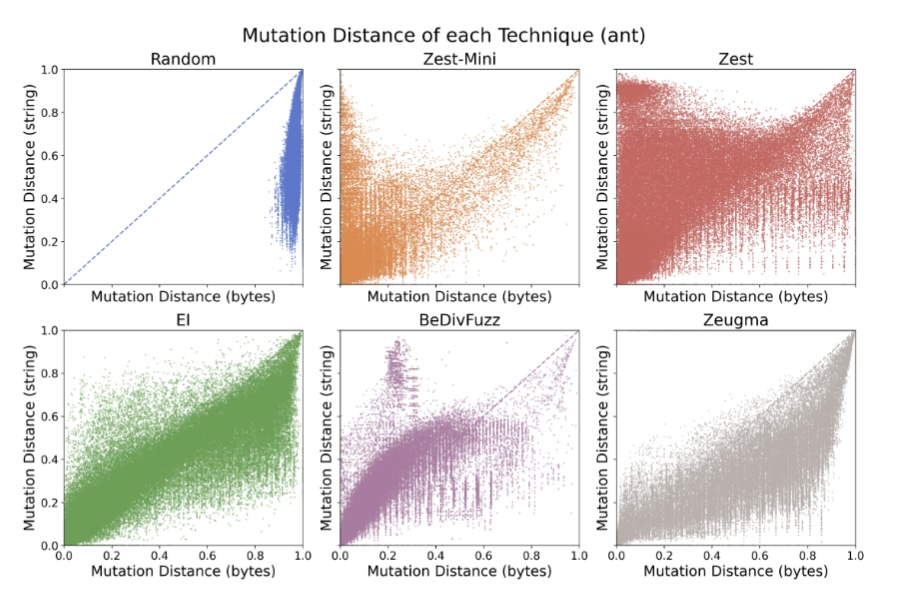
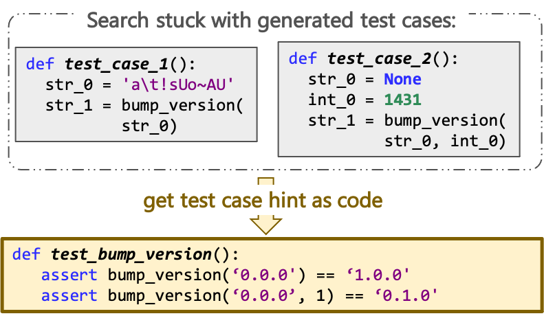
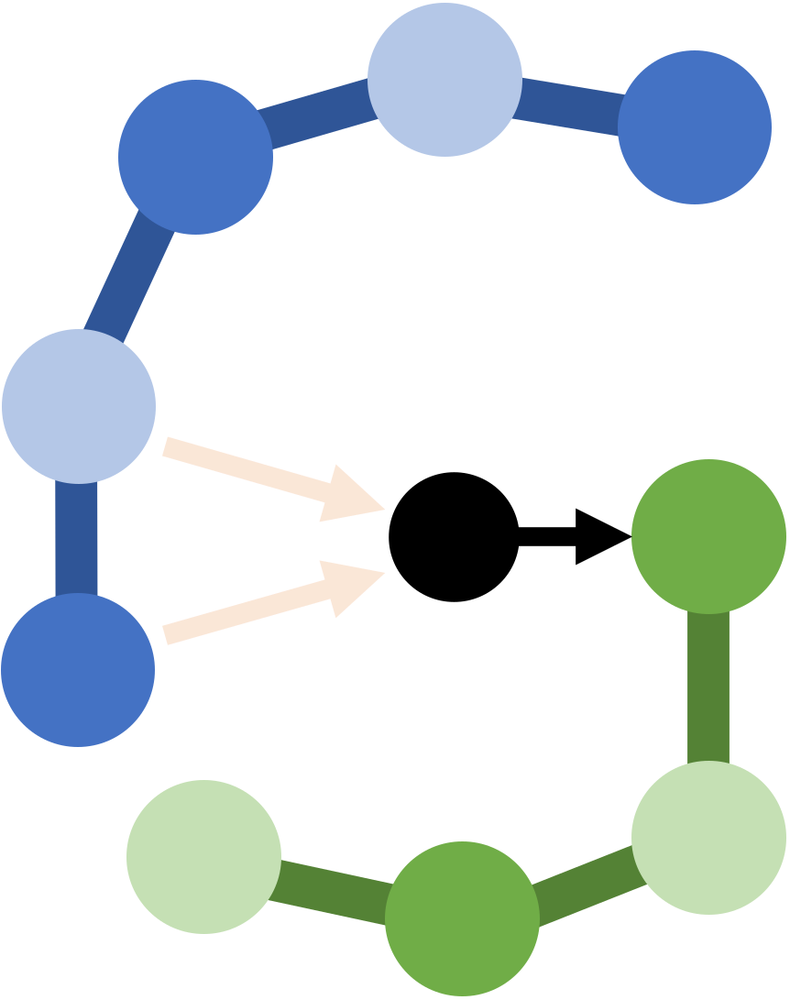

Caroline Lemieux
Assistant ProfessorCanada Research Chair in Software Testing and Analysis (Tier 2)
University of British Columbia
Department of Computer Science
Email: clemieux@cs.ubc.ca
Twitter: @cestlemieux
Github: carolemieux
About
Software has become intertwined with so many parts of our lives. We hope it is correct and secure, but in practice, it is often not. The goal of my research is to build tooling that helps developers improve the correctness of software by exposing software behaviours as they exist in-the-wild. This leads to a broad array of research interests over software engineering and programming languages topics: test-input generation, unit test generation, code-documentation inconsistency detection, specification mining, type inference, amongst others.
In May 2021, I received my Ph.D. at the University of California, Berkeley, where I was advised by Koushik Sen. My PhD research focused on automatic test-input generation, particularly fuzz testing, with the goal of producing inputs that induce correctness, security, and performance bugs in software. I also explored how the search techniques used to scale these input generation tools apply in the domain of program synthesis. My dissertation is available on the EECS department website.
From July 2021-2022, I was a postdoctoral researcher at Microsoft Research, NYC. There, I worked on methods to safeguard reinforcement learning and leverage deep learning for testing. In Summer 2018, I interned at Google, where I built large-scale static analysis to automatically generate fuzz targets. My team continued building on my work after my departure, resulting in the FUDGE tool. In Summer 2017 I was a research intern in the Tools for Software Engineers group at Microsoft, working on automating detection of anomolous errors in the distributed build system CloudBuild. In May 2016 I received my B.Sc. (in Combined Honours Computer Science and Mathematics) at the University of British Columbia, and was awarded the Governor General's Silver Medal for highest standing in the graduating class of the Faculty of Science.
If you are on the academic job market, you may be interested in perusing my research, teaching, and diversity statements.Teaching
- 2025W2: CPSC 539L, Topics in Programming Languages: Automated Testing, Bug Detection, and Program Analysis
- 2024W2: CPSC 410, Advanced Software Engineering. Public Page. Canvas.
- 2024W1: CPSC 539L, Topics in Programming Languages: Automated Testing, Bug Detection, and Program Analysis
- 2023W2: CPSC 410, Advanced Software Engineering (with Alex Summers)
- 2022W1: CPSC 539L, Topics in Programming Languages: Automated Testing, Bug Detection, and Program Analysis
Projects
|  | Parametric generators transform a bytestream input into a structured generator output. This trick allows us to get mutations "for free", enabling feedback-directed fuzzing over structured inputs. However, it leads to what we term the havoc effect: relatively small byte mutations can lead to relatively large structured input mutations. This paper compares plain parametric generators to three approaches to make generator mutations more sensible: Execution Indexing (JQF), BeDivFuzz, and linked crossover in Zeugma. These approaches all reduce the havoc effect, but there are only coverage increases in very particular cases (e.g., when input is not read strictly left-to-right). |
| A multitude of techniques have been suggested for Python type inference, from leveraging abstract interpretation to large language models. QuAC explores a simple but robust algorithm to Python type inference, by extracting the attributes that are referenced on each parameter, and using these to retrieve the most likely type. QuAC can recursively predict container types, and does so much more consistently than an LLM baseline. QuAC's implementation is available as open source, as well as a replication package. |  | Search-based test suite generation can get stuck when the test cases it generates are too far from "expected" uses of the code under test. Conveniently, Large Language Models of Code promise to produce "expected" code, when prompted properly. CodaMOSA explores the synergy between LLM-based test case generation and search-based mutation, achieving higher coverage than either search-based or LLM-based approaches on their own. CodaMOSA's implementation is available as open-source, but requires an OpenAI API key to query Codex. |
| Learning higher-level representations of a set of examples has applications to fuzzing, comprehension, and testing tasks, and is of interest at a fundamental language understanding level. Arvada takes in an example set and an oracle, and learns a grammar that expands that example set as much as possible. Arvada learns that grammar by trying to learn "parse trees" via a sequence of "bubble" and "merge" operations over the example set. The bubbles add structure, and the merges add generalization. Check out the Arvada code base! | |
|  | Input-output examples as specifications for program synthesis are compelling as a simple communication language and for their flexibility. However, especially for table transformations, they can be tedious to fully provide, and also omit some easily-available user intent. Gauss combines a UI that creates a graph of user intent while a user builds a partial input-output example with a novel form of inductive reasoning over graphs. This allows for faster, more precise synthesis of table transformations, and opens the avenue of graphs as synthesis specification. You can try out Gauss's UI by launching the binder in the code base! |
|
|
Effective property-based testing relies on the rapid generation of many diverse valid inputs for the program under test. However, when validity constraints on inputs are complex, this requires building specialized generators for each program under test. However, if an existing generator generates a superset of all valid inputs, we should be able to guide it to generate only valid inputs. RLCheck uses a Q-table based Reinforcement Learning approach to guide generators to produce many diverse valid inputs, given a validity function. RLCheck's Java implementation is available as open-source. |
|
|
Modern Python APIs are complex and very difficult to learn. Novice users could ask their API questions on StackOverflow, but the answer might be slow to arrive or unpersonalized... enter AutoPandas. AutoPandas is a programming-by-example synthesis engine for the Python API pandas, in particular for its dataframe transformations. To handle the complex space of API programs, AutoPandas uses a novel neural-backed generator approach to synthesizing programs in the pandas API. You can try out AutoPandas live here. |
|
|
FuzzFactory is an extension of AFL that generalizes coverage-guided fuzzing to domain-specific testing goals. FuzzFactory allows users to guide the fuzzer's search process without having to modify the core search algorithm. FuzzFactory's key abstraction is that of waypoints: intermediate inputs that are saved during the fuzzing loop. For example, PerfFuzz saves inputs that increase loop execution counts, a magic-byte fuzzer may save inputs that have partially correct magic bytes, or a directed fuzzer may save inputs that are more likely to exercise a program point of interest. |
|
|
Binary-level mutational fuzzing excels at exercising the syntactic (parsing) phase of programs, but produces few valid inputs that exercise deeper stages of the program. QuickCheck-style random testing allows us to test programs with random generators of highly-structured inputs, but does not use program feedback to bias its input generation. Zest, the default front-end of our JQF platform, leverages (1) QuickCheck-style generators to generate only syntactically valid inputs, and (2) program coverage and validity feedback to generate inputs which explore deep parts of the program. |
|
|
Performance problems in software can arise unexpectedly when programs are provided with inputs that exhibit pathological behavior. But how can we find these inputs in the first place? Given a program and at least one seed input, PerfFuzz automatically generates inputs that exercise pathological behavior across program locations, without any domain knowledge. |
|
|
FairFuzz is a fuzzer built on top of AFL which targets rare branches to achieve faster program coverage. FairFuzz achieves this by (1) selectively mutating inputs which exercise branches hit by few fuzz-tester generated inputs and (2) using a mutation mask to restrict mutations of these inputs to the parts which can be mutated while still hitting the branch of interest. On our benchmarks, FairFuzz achieves program coverage than AFL or AFLFast, and has a particular advantage on programs with highly nested structure. |
Publications
- Ao Li, Madonna Huang, Vasudev Vikram, Caroline Lemieux, Rohan Padhye. The Havoc Paradox in Generator-Based Fuzzing. ACM Transactions on Software Engineering and Methodology, 2025. pdf.
- Jifeng Wu, Caroline Lemieux. QuAC: Quick Attribute-Centric Type Inference for Python. PACMPL(OOPSLA) 2024. pdf.
- Ao Li, Madonna Huang, Caroline Lemieux, Rohan Padhye. The Havoc Paradox in Generator-Based Fuzzing (Registered Report). In Proceedings of FUZZING'24. pdf.
- Madonna Huang, Caroline Lemieux. Directed or Undirected: Investigating Fuzzing Strategies in a CI/CD Setup (Registered Report). In Proceedings of FUZZING'24. pdf.
- Caroline Lemieux, Jeevana Priya Inala, Shuvendu K. Lahiri, Siddhartha Sen. CodaMOSA: Escaping Coverage Plateaus in Test Generation with Pre-trained Large Language Models. In Proceedings of the 45th International Conference on Software Engineering, ICSE 2023. pdf, slides, video.
- Neil Kulkarni*, Caroline Lemieux*, and Koushik Sen. Learning Highly Recursive Input Grammars. In Proceedings of the 36th IEEE/ACM International Conference on Automated Software Engineering, ASE 2021. pdf, extended tech report on ArXiV.
(*equal contribution) - Rohan Bavishi, Caroline Lemieux, Koushik Sen, Ion Stoica. Gauss: Program Synthesis by Reasoning over Graphs. OOPSLA 2021. pdf.
- Sameer Reddy, Caroline Lemieux, Rohan Padhye, Koushik Sen. Quickly Generating Diverse Valid Test Inputs with Reinforcement Learning. In Proceedings of the 42nd International Conference on Software Engineering, ICSE 2020. pdf, slides, video.
- Rohan Bavishi, Caroline Lemieux, Roy Fox, Koushik Sen, Ion Stoica. AutoPandas: Neural-Backed Generators for Program Synthesis. OOPSLA 2019. pdf.
- Rohan Padhye, Caroline Lemieux, Koushik Sen, Laurent Simon, Hayawardh Vijayakumar. FuzzFactory: Domain-Specific Fuzzing with Waypoints. OOPSLA 2019. pdf. [PDF updated from ACM DL version 01/20/21 to fix typos]
- Domagoj Babic, Stefan Bucur, Yaohui Chen, Franjo Ivancic, Tim King, Markus Kusano, Caroline Lemieux, László Szekeres, Wei Wang. FUDGE: Fuzz Driver Generation at Scale. In Proceedings of the 2019 27th ACM Joint Meeting on European Software Engineering Conference and Symposium on the Foundations of Software Engineering, ESEC/FSE 2019 (Industry Track). ACM/SIGSOFT Best Paper Award of ESEC/FSE Industry Track. pdf.
- Rohan Padhye, Caroline Lemieux, Koushik Sen. JQF: Coverage-Guided Property-Based Testing in Java. In Proceedings of the 28th International Symposium on Software Testing and Analysis, ISSTA 2019 (Tool Demo Track). ACM/SIGSOFT Tool Demonstration Award. pdf.
- Rohan Padhye, Caroline Lemieux, Koushik Sen, Mike Papadakis, Yves Le Traon. Semantic Fuzzing with Zest. In Proceedings of the 28th International Symposium on Software Testing and Analysis, ISSTA 2019. ACM/SIGSOFT Distinguished Artifact Award. pdf.
- Rohan Bavishi, Caroline Lemieux, Neel Kant, Roy Fox, Koushik Sen, Ion Stoica. Neural Inference of API Functions from Input–Output Examples. In Workshop on ML for Systems at NeurIPS 2018. pdf, slides.
- Caroline Lemieux and Koushik Sen. FairFuzz: A Targeted Mutation Strategy for Increasing Greybox Fuzz Testing Coverage. In Proceedings of the 33rd IEEE/ACM International Conference on Automated Software Engineering, ASE 2018. pdf, slides.
- Caroline Lemieux, Rohan Padhye, Koushik Sen, and Dawn Song. PerfFuzz: Automatically Generating Pathological Inputs. In Proceedings of the 27th ACM SIGSOFT International Symposium on Software Testing and Analysis, ISSTA 2018. ACM/SIGSOFT Distinguished Paper Award. pdf, slides.
- Caroline Lemieux, Dennis Park and Ivan Beschastnikh. General LTL Specification Mining. In Proceedings of the 30th International Conference on Automated Software Engineering, ASE 2015, Lincoln, USA. pdf, slides.
- Caroline Lemieux and Ivan Beschastnikh. Investigating Program Behavior Using the Texada LTL Specifications Miner. In Proceedings of the 30th International Conference on Automated Software Engineering, ASE 2015, Lincoln, USA. (Tool Demonstration Track). pdf.
- Caroline Lemieux. Mining Temporal Properties of Data Invariants. In Proceedings of the 37th International Conference on Software Engineering, ICSE 2015, Florence, Italy. (ACM SRC Research Abstract). pdf.
Research Team
Prospective Students: (Updated Sep 2025) I will not be admitting students for the 2026/27 academic year. Check for other SPL faculty members' admissions plans if you are interested in PL/SE research at UBC, look at the Security and Privacy group if you are interested in security at UBC.
I've been lucky to work with some excellent students throughout my career.
Graduate students:
- Mayant Mukul (PhD)
- Phoebe Xu (PhD-Track, co-advised with Reid Holmes)
- Zahin Wahab (PhD)
- Zung Nguyen (MSc)
Undergraduate students at UBC:
- Kevin Liu (USRA, URA): Argument Generation for Automatically Generated Unit Tests (ExploTest)
- Randy Zhu (USRA, Honours Thesis): Readability and Maintainability of Automatically Generated Unit Tests (ExploTest)
Past graduate students:
- Guanming Qiao (MSc)
- Madonna Huang (MSc)
- Jifeng Wu (MSc)
- Elaine Yao (MASc → PhD Cornell): worked on generative fuzzing for x86
Past undergraduate students:
- Zihao Huang (UBC, WLIURA): Explotest
- Gary Wu (UBC, WLIURA): PBT from Unit Tests with LLMs
- Alain Zhiyanov (UBC): working on allowing open-source models to be used with CodaMOSA
- Brooke Dai (UBC): worked on extracting grammars from GRIMOIRE pseudo-rules.
- Suzette Sun (UBC): worked on extracting grammars from GRIMOIRE pseudo-rules.
- Lily Lin (UBC): worked on coverage visualization for fuzzing.
- Jonathan Shi (Berkeley): worked on debugging tools for JQF/Zest.
- Neil Kulkarni (Berkeley): worked on grammar mining. See ASE'21 paper.
- Sicheng (Jack) Liang (Berkeley): worked on deep learning for RLCheck. Tech report pdf and bib.
- Sameer Reddy (Berkeley): worked on RLCheck. See ICSE'20 paper.
Invited Talks
- The Power of Fuzzing and Large Language Models. Keynote at SBFT'24. slides. April 2024.
- Expanding the Reach of Fuzzing. Invited talk at FuzzCon Europe 2020. Talk video. Sep 2020.
- RLCheck: Quickly Generating Diverse Valid Test Inputs with Reinforcement Learning. Invited talk at ISCA workshop on ML for Computer Architecture and Systems. May 2020.
- Expanding the Reach of Fuzzing. Tutte Institue for Mathematics and Computing. Mar 2020.
- RLCheck: Quickly Generating Diverse Valid Test Inputs with Reinforcement Learning. Google Brain. Feb 2020.
- Expanding the Reach of Fuzzing. Facebook. Jan 2020.
- Expanding the Reach of Fuzzing. Bay Area Fuzzing Meetup. Dec 2019.
- Expanding the Reach of Fuzz Testing: From Syntax Errors to Program Synthesis. University of Massachussets Amherst Rising Stars Lecture Series. Talk video. Nov 2019
- A View of Programming Languages & Software Engineering for ML Software. Workshop on AI Systems at SOSP'19. Oct 2019.
Service
- SPLASH/ISSTA 2026 Doctoral Symposium Chair
- FSE 2026 Program Committee
- OOPSLA 2025 Review Committee
- FUZZING 2025 Program Committee
- FUZZING 2024 Program Committee
- ICSE 2024 Program Committee
- ESEC/FSE 2023 Student Research Competition Co-chair
- ISSTA 2023 Program Committee
- FUZZING 2022 Program Committee
- ASE 2022 Review Process Co-Chair
- ISSTA 2022 Program Committee
- PLDI 2022 Program Committee
- ESEC/FSE 2022 Diversity & Inclusion and Hybridization Chair
- Microsoft Tech Resilience Mentor, Fall 2021
- PLMW @ SPLASH 2021 Panelist
- TOSEM 2021 Reviewer (a few times)
- TSE 2021 Reviewer
- ISSTA 2021 Tool Demonstrations Program Committee
- NeurIPS 2020 Workshop on Computer-Assisted Programming Program Comittee
- ASPLOS 2021 External Review Committee
- OOPSLA 2020 Artifact Evaluation Committee
- Distinguished Artifact Reviewer Award
- IEEE Software 2020 Reveiwer
- ESEC/FSE 2020 Tool Demos
- ICST 2020 Posters
- TSE 2019 Reviewer
- STVR 2019 Reviewer
- TAP 2019 Program Committee
- ICSE 2019 Demos
- ICSE 2018 Posters
- Subreviewer: ICSE 2017 NIER, PLDI 2017, ASPLOS 2018, PLDI 2018, CAV 2018, ICST 2020